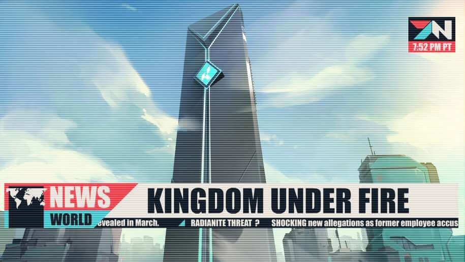

Valorant
Valorantın Merak Edilen Hikayesi
Valorant, bizim Dünya’mızın başka bir versiyonunda, yakın gelecekte geçiyor. Bu konuda bir video paylaşan Necrit, oyunun beta versiyonunda Split haritasının Garaj kısmında bir takvim olduğunu fark etmiş. Haritanın üzerinde yazan tarih ise 2053. Ancak ileriki yamalarda Riot bu tarihi takvim üzerinden kaldırılmış. Valorant evreninde gelişen hikaye,”İlk Işık” adı verilen bir olaydan sonra yaşanıyor. Bu olay, bütün Dünya çapında hissediliyor ve hayat, teknoloji ve devletlerin yönetiliş biçimlerinde değişikliklere neden oluyor. Ancak Dünya çapında, seçilmiş birkaç kişide, bu olay ile bağlantılı olarak bazı yetenekler gelişmeye başlıyor. Bu yetenekleri gösteren insanlara Radyant adı veriliyor. Ayrıca, ajan kartlarında görünen numaraların, ajanlarımızın Valorant protokolüne katılma sırası olduğu düşünülüyor.
Valorant Protokolü
Valorant Protokolü, Dünya’nın farklı yerlerinden seçilmiş farklı ajanları toplayıp, “İlk Işık” tehditi ile savaşmayı amaçlayan gizli bir örgüt. Seçilen ajanlar, alanlarının en iyisi ve savaşmaya hazır kişiler. Bazıları asker, bazıları suçlu… Karakterlerin konuşmalarından anladığımız kadarı ile bazı ajanlar, daha önceden beraber savaşmış ve halihazırda arkadaşlıkları olan kişiler (Omen ve Viper, Raze ve Breach…). Bazıları ise daha önce birbirlerine karşı savaşmış, ancak dışardan gelen tehdite karşı farklılıklarını bir kenara bırakıp beraber savaşmak zorunda kalan ajanlar. (David Nottingham – Yaratıcı Yönetmen, Joe Ziegler – Riot Games Valorant Yöneticisi) “İlk Işık” olayından sonra, Radyanit adı verilen bir madde bulunuyor/keşfediliyor. Radyantlar’ın özelliklerini, kendilerine doğa üstü güçler veren Radyanit’ten aldığına inanılıyor. Kingdom Çoğu haritada logosunu gördüğümüz Kingdom (Krallık) ise, Radyanit’in güçlerini kullanmayı hedefleyen bir kuruluş. Valorant protokolünün kurulmasının amaçlarından biri de Kingdom’ın önüne geçmek ve kötücül planlarına engel olmak. Her haritada Kingdom için ayrı bir önem teşkil ediyor. Split Burası aslında Kingdom’un Genel Merkezi’nin bulunduğu yer. Bu nedenle haritanın her yerinde “K” logosunu görmek mümkün. Genel Merkez Gökdeleni, haritada da gördüğümüz üzere, terk edilmiş ve bazı katları yok olmuş halde.
Haven ve Bind
Haven, Kingdom tarafından ele geçirilen ve Radyanit depolamak için kullanılan eski bir tapınak iken Bind, Ortadoğu’da ele geçirilen bir kasaba. İki alanda da, Radyanit’in yeraltında depolandığını anlayabiliyoruz, çünkü ikisinde de yerin derinliklerine inen asansörler var. Bind, ele geçirilmesinin ardından Kingdom tarafından, Radyanit’in işlendiği bir rafineriye dönüştürülmüş. Alanda birçok traktör ve Radyanit’in depolandığı kutulardan görmek mümkün. A alanında bulunan laboratuvar ise, bombaların (kara madde) üretildiği yer. Ancak burada ilginç olan durum, hem bombaların üzerinde hem de bomba çözme kitlerinde Kingdom’un logosu olması.
Ayrıca Bind’da savunan başlangıcındaki afişlerden gördüğümüz üzere kasabalılar, Kingdom’a karşı protestolarda bulunmuş. Kingdom’u burada istemeyen kasabalılar, hem Kingdom kulelerinin üzerine hem de depo kutularına çarpı koymuş. Ayrıca duvara “Yalanlar Krallığı” (Kingdom of Lies) yazan bir grafiti de yapılmış.
Ascent
Ascent ve Eğitim Haritası ise, Bind’da da reklamı yapılan, Radyanit gücü ile havada asılı tutulan “Radyant Adaları“ndan bazıları (Şu an bu reklamın yerinde Masters reklamı var). Bu adalar, eskiden Venedik‘in parçası iken, stabil olmayan Radyanit nedeni ile yükseliyorlar. Valorant evreninde yayınlanan ilk sinematikte de gördüğümüz üzere, Phoenix ve Jett, bir Radyanit kristali için savaşıyor. Sage’in telsizden Phoenix’e “Bombayı kurmasına izin verme” dediğini duyuyoruz. Ardından Phoenix uyandığında, Venedik’in bir kısmının havada asılı kaldığını görüyor. Aslında bu sinematik sayesinde adaların nasıl süzülmeye başladığını anlıyoruz. Kingdom ise bu durumdan yararlanıp bu adaların reklamını yapıyor.
Icebox
Icebox ise, Kingdom tarafından kurulmuş gizli bir Radyanit madeni. Alanda bolca gördüğümüz üzere, çıkarılan Radyanit, kargo konteynırları içerisinde gemilere yükleniyor. Eğer B Bomba alanında, savunan tarafı başlangıcı kısmındaki buzulun içerisine bakarsanız, bir tünel kazındığını ve buradan Radyanit çıkarıldığını görebilirsiniz.